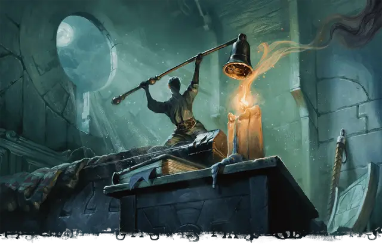

Великаний подкидыш
Giant Foundling

Если Мастер решит разрешить предыстории великаньего подкидыша и резчика рун, то все персонажи в кампании получат доступ к бонусной черте. Если вы выберете одну из этих предысторий, вы получите бонусную черту, указанную в этой предыстории. Если выбранная вами предыстория не даёт бонусной черты, вы получаете бонусную черту по своему выбору из следующего списка:
- Одарённый
- Крепкий
Хоть вы и не великан, вы выросли среди великанов. Может быть, вы были сиротой, которую приютила сочувствующая семья каменных великанов, которые воспитали вас как одного из своих. Или, возможно, вы жили в затерянном доисторическом уголке мира, в окружении великанов, устрашающих исполинов или неуклюжих динозавров.
Что-то в вашем окружении — возможно, пища или вода, которые поддерживали вас в детстве, стихийная магия, присущая месту вашего дома, или какое-то благословение роста, дарованное вам, — обеспечило вам значительный рост. С помощью этой магии вы научились воплощать титаническую мощь великанов. Вы привыкли перемещаться по миру, намного большему, чем вы, и это отражается на ваших навыках, отношении и взглядах на жизнь.
Навыки: Выживание, Запугивание
Языки: Великаний и один язык по вашему выбору
Снаряжение: рюкзак, комплект дорожной одежды, маленький камень или ветка, напоминающие вам о доме, и кошель с 10 зм
История рождения
Как вы оказались среди колоссальных существ, зависит от вас, но таблица «Происхождение подкидышей» предлагает несколько вариантов.
Происхождение подкидышей
| к6 | Происхождение |
| 1 | Вы были найдены младенцем семьёй кочевников-великанов, которые вырастили вас как одного из своих. |
| 2 | Семья каменных великанов спасла вас, когда вы упали в горный утёс, и с тех пор вы живёте с ними под землей. |
| 3 | Вы были потеряны или брошены ребенком в джунглях, кишащих хищными динозаврами. Там вы нашли столь же потерянного ледяного великана и вместе выжили. |
| 4 | Ваша ферма была разрушена, а ваша семья погибла в битве между враждующими группами великанов. Сочувствующий великаний солдат, терзаемый чувством вины за разрушение, пообещал позаботиться о вас. |
| 5 | После того, как в детстве вам приснилась серия странных снов, ваши суеверные родители отправили вас учиться к могущественному, но отчужденному штормовому великану-оракулу. |
| 6 | Играя с друзьями в прятки, вы наткнулись на замок облачного великана, который сразу же усыновил вас. |
Умение: Удар великанов
Вы получаете черту «Удар великанов».
Создание персонажа великаньего подкидыша
Ваши невероятные размеры и опыт работы с титаническими существами дали вам уникальную перспективу. Хотя вы необычайно крупны для своего вида, вы не больше ребенка-гиганта, поэтому вы можете быть очень внимательны к своим размерам.
Предлагаемые характеристики. В таблице «Черты характера великаньего подкидыша» предлагаются различные черты, которые вы могли бы принять для своего персонажа.
Черты характера великаньего подкидыша
| к6 | Черта характера |
| 1 | То, чего мне не хватает в росте, я компенсирую чистой злобой. |
| 2 | Я настаиваю на том, чтобы меня воспринимали всерьёз, как взрослого человека. Никто не будет говорить со мной свысока! |
| 3 | Переполненные помещения вызывают у меня дискомфорт. Я бы предпочел оказаться в открытом поле, чем в шумной таверне. |
| 4 | Мне нравится быть маленьким. Это помогает мне оставаться незамеченным — и недооцененным. |
| 5 | Каждая лавина начинается с одного камушка. |
| 6 | Мир всегда кажется мне слишком большим, и я боюсь, что никогда не найду в нём своё место. |